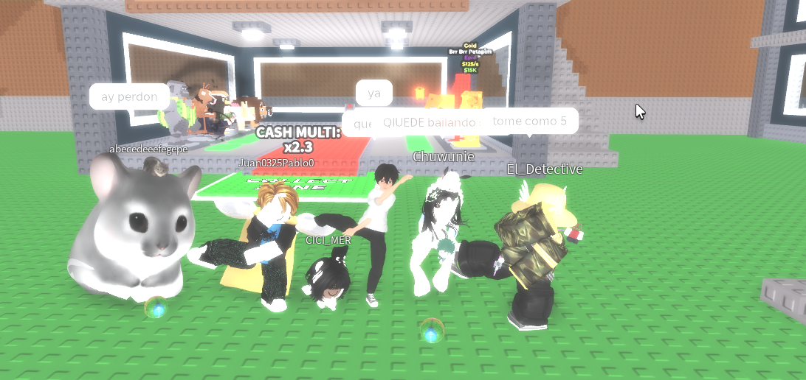

今日 もちょっと 暇な 日でした、 今日は 私の 部屋を 片付けました。
私は３ 台のスケートボードを 持っていますが、 使う 場所がありません。どうしたらいいかわかりません 今夜に 図書館で 友達と 日本語を 勉強して、ゲームしました。
今日の 勉強のトピックはリスニング 練習でした。だから、 私たちと 一緒にポッドキャストを 聞きました。 新しい 言葉が 沢山でしたが、 分かりました。
後で 友達とゲームをしました。ROBLOXの 有名ゲーム ”Steal a Brainrot”しました。 楽しかったです。
写真を 取りました

友達写真です